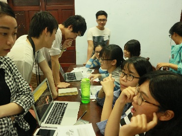
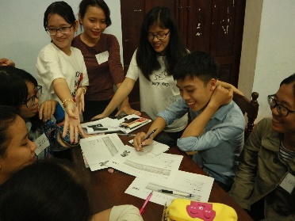
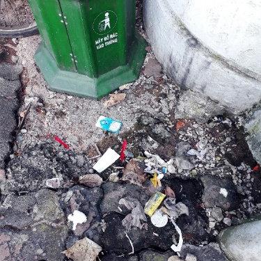
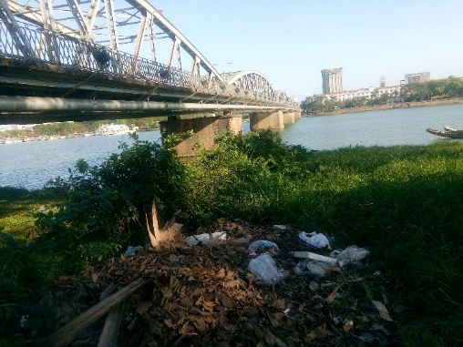
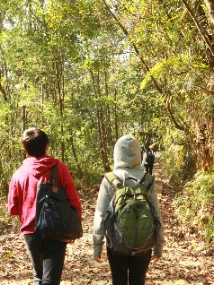
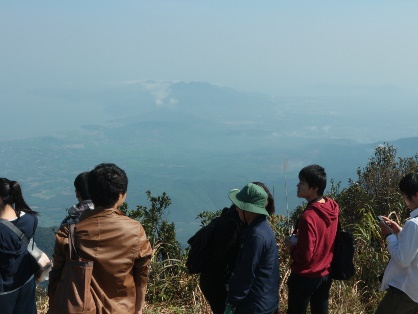

JVSIは2013年に結成され，現在5名で活動しています。結成当初から、ベトナム・フエにあるフエ農林大学のEnglish Clubの生徒と提携し、主に環境プロジェクトを推進してきました。
2017年度のJVSIは現地のニーズを大切にすべく、English Clubのメンバーが問題意識をもっているテーマにフォーカスすることにしました。そして彼らとの議論の結果、春渡航のテーマを「環境」と「教育」にすることになりました。
〇環境
ベトナムでは2016年、工場排水によって魚の大量死という公害問題が発生しました。もちろん私たちは制度や設備を変えることはできません。しかし日本の過去の公害問題を振り返ってみると、それらの制度や設備は必ずしも政府のみが主導してきたわけではありません。そこには市民や企業が三位一体となって取り組んできた過去がありました。
たしかにその中における市民の発言力は本当に微々たるものでしょう。ですが私たちのプロジェクトの対象となる私たちと同世代の若者たちには、自分たちができることからとりあえず何かやってみるということを体験してほしかった。そこで私たちは今回、夏に「環境フォトコンテスト」をやることを想定して、そのプロジェクトを運営するために、自分たちで実際に写真をとってみたり、コンテストの内容を議論したりするワークショップを開くことで、その一歩踏み出すきっかけづくりをサポートするプロジェクトを行うことにしました。


参加学生との議論の様子


左「もう一歩」：あともう一歩先にゴミ箱があるのに、なぜその手前で捨ててしまうのか。
右「contrary」：橋とごみ、どちらも町のシンボルになってしまっている。
〇教育
こちらも近年ベトナムの話題の１つとなっている「詰め込み教育」の問題です。日本では逆に「ゆとり教育」が問題視されることがありましたが、一概にどちらがいいということはできませんし、これについても私たちは制度を変えることはできません。しかし詰め込み教育の補完として実験や課外活動など、日本では当たり前の、そういった主体的な教育の在り方を提示することはできます。その提示をより有意なものにするために、まず春は現地の教育現場の声や様子を知ること、夏に行う実験や課外活動のプランが可能かどうかの視察を行うことにしました。


課外活動の予定地である森林公園の視察の様子
夏渡航に向けて、今回の春の反省を生かしながら改善を重ねていこうと思います。またこれらの問題に取り組むことは、問題の解決に貢献するだけでなく、私たちと提携先のメンバーの成長にもつながっているということを、提携先の学生たちも話してくれています。「学生であることの制限」は多いですが、むしろその中でもいきる「学生であることの強み」を生かして、JVSIはさらに成長してまいります。
JVSIリーダー 谷田